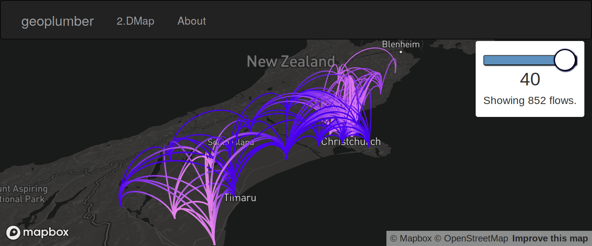

The University of Leeds is one of the only places in the world where you can find expertise in cutting-edge methods for geospatial analysis alongside world leading transport research. The School of Geography is ranked in the top 20 geography departments worldwide; while ITS Leeds is rated in the top 10.
Finding both subjects in the same university is rare, finding both subjects in the same faculty is unique. When these strengths are combined, amazing things are possible. This theme seeks to provide the go-to point for quantitative and computational transport geography research worldwide.

Illustration of simulated flows between origins and destinations in an interactive 2.5D map using Uber’s deck.gl software